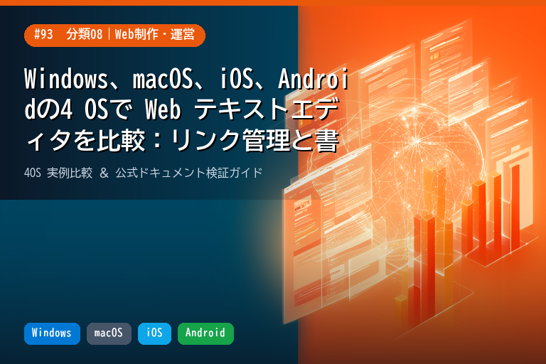

#93｜分類08: Web制作・ブログ・デジタルマーケティング 2026-11-28

Windows、macOS、iOS、Androidの4 OSで Web テキストエディタを比較：リンク管理と書式設定の実践例｜Windows・macOS・iOS・Android
Web制作やブログ運営において、「どのデバイスでコンテンツを編集し、どう管理するか」は生産性に直結する重要な課題です。特に「モバイルファースト」の時代において、PCでの緻密な構成案作成と、スマートフォンでのクイックな修正やリンク確認をシームレスに行うには、各OS（Windows, macOS, iOS, Android）の標準機能の違いを正しく理解しておく必要があります。
この記事では、4つの主要OSにおけるテキスト編集・リンク管理の実践例を徹底比較し、クロスデバイスで一貫したコンテンツを制作するためのノウハウを解説します。
4OS比較早見表
| 項目 | Windows 11 (Edge/Word) | macOS (Safari/Pages) | iOS (iPhone: Safari/Pages) | Android (Chrome/Docs) |
|---|---|---|---|---|
| 主な編集手段 | Edge（閲覧）、Word、メモ帳 | Safari（閲覧）、Pages、TextEdit | Safari（閲覧）、Pages、メモ | Chrome（閲覧）、Google ドキュメント |
| 書式設定 | Word等での高度な装飾が可能 | Pagesでのリッチテキスト編集 | 「メモ」や「Pages」で整形 | Google ドキュメントが主流 |
| リンク管理 | Edge「コレクション」機能 | Safariブックマーク、iCloud同期 | 「メモ」アプリのリンクリスト | Chromeブックマーク、Google連携 |
| コード表示 | VS Code（推奨）、メモ帳 | TextEdit、VS Code（推奨） | 「メモ」でのMarkdown手動入力 | ブラウザ内蔵簡易入力に限定 |
1. Windows 11 での実例手順
Windows環境では、ブラウザの「Edge」と高機能なテキストエディタを組み合わせるのが標準的なワークフローです。
モバイル表示シミュレーション（Chrome DevTools）
PCで制作したページがモバイルでどう見えるかを確認するには、Google Chromeのデベロッパーツールを活用します。
1. Chromeを開き、F12キーを押してツールを起動。
2. 「Toggle device toolbar」（または Ctrl+Shift+M）をクリック。
3. 上部のデバイス選択から「iPhone」や「Pixel」を選択し、レスポンシブな挙動を確認します。
リンク管理とキャッシュクリア
- リンク管理: Edgeの「コレクション」機能を使います。右クリックから「このページをコレクションに追加」を選択することで、制作中の参考URLをグループごとに整理できます。
- キャッシュクリア: 設定の「プライバシーおよびセキュリティ」→「ブラウザデータを削除」から実行します。これにより、更新したCSSやリンクの反映漏れを防ぎます。
2. macOS での実例手順
macOSでは、Appleエコシステムを活かしたシームレスな同期と、Safariの高度なプレビュー機能が強みです。
モバイル表示シミュレーション
- 注意点: iOS版SafariはPCのようなDevToolsを標準提供していません。iPadPro等で「Safari」アプリ内のデベロッパーツールを活用するか、Mac上のブラウザでシミュレートするのが基本です。
リンク管理とキャッシュクリア
- リンク管理: Safariのブックマークバーに加え、「ファイル」アプリとiCloud Driveを連携させることで、PCとiPhone間でURLリストを同期します。
- キャッシュクリア:
Command+Option+Eを押すか、「設定」→「プライバシー」→「ウェブサイトデータをクリア」から実行します。
3. iOS（iPhone / iPad）での実例手順
iOSは「入力の機動力」に優れていますが、ブラウザ上での直接的なHTML編集には制限があります。
テキスト整形とリンク管理
- 書式設定: Safari上で直接太字や色を付けることはできません。Safariで確認した内容を「共有」→「テキストをコピー」し、「メモ」アプリまたは「Pages」に貼り付けて整形するのが標準的な手順です。
- リンク管理: 「メモ」アプリにURLを貼り付け、チェックリスト化することで、SNS投稿前の最終確認用リストとして活用できます。
キャッシュクリア
- 手順: Safariアプリの「共有」メニューから「オプション」を選択し、「閲覧履歴と Web データを消去」を実行します。
4. Android での実例手順
AndroidはGoogleサービスとの親和性が高く、クラウドベースのエディタとの連携がスムーズです。
モバイル表示シミュレーション
- 手順: Chromeアプリのメニュー（3ドット）から「PC サイトを表示する」を切り替えることで、デスクトップ版の挙動を確認できます。
テキスト整形とリンク管理
- 書式設定: ブラウザでの直接編集よりも、「Google ドキュメント」アプリを使用するのが最も安定した方法です。ここで作成した内容は自動的にクラウド保存され、PCのChromeからも即座に参照可能です。
- キャッシュクリア: Chromeメニュー → 「設定」→「プライバシーとセキュリティ」→「データを削除」から実行します。
よくあるトラブルと解決チェックリスト
クロスデバイスで制作を行う際、以下の問題が発生しやすいです。
| トラブル内容 | 原因の推測 | 解決策・チェック項目 |
|---|---|---|
| リンクがクリックできない | キャッシュの残留、または相対パスのミス | ブラウザのキャッシュを各OSの手順で削除。DevToolsの「ネットワーク」タブで403/404エラーが出ていないか確認。 |
| 書式が崩れる・画像が出ない | HTMLエンティティ（<br>等）の未処理 |
Windows/macOSのエディタで「置換」機能を使用し、特殊文字を正規化する。モバイルではテキストのみコピーしてPCで再整形。 |
| ブックマークが同期されない | アカウントのサインアウト・同期オフ | Edgeなら「設定」のアカウント確認。iOS/MacならiCloud設定の「ブックマーク」オン/オフを確認。 |
| レスポンシブ表示が崩れる | CSSメディアクエリの解釈ミス | Chrome DevToolsのDevice Modeで、iPhone SEなど極端に幅の狭いデバイスをシミュレートして再調整。 |
まとめ：快適なマルチOS環境を作るポイント
4つのOSを使い分ける際の鍵は、「各デバイスの得意分野に役割を振り分けること」です。
- Windows / macOS: 緻密なHTML構造の構築、SEOツールの解析、VS Code等を用いたコード編集。
- iOS / Android: コンテンツのクイックな下書き、SNSでのリンク確認、Googleドキュメントによる共同編集。
このマルチOS環境を最大限に活かすためには、以下の要素を組み合わせるのがプロの推奨です。
- レンタルサーバーと独自ドメイン: 制作したコンテンツを即座に公開し、実機（iPhone/Android）で「本番環境」の挙動を確認するフローを構築しましょう。
- SEOツールとの連携: PCでキーワード分析を行い、モバイルで実際の検索結果（SERP）の表示を確認することで、より精度の高いWeb制作が可能になります。
- 周辺機器の活用: Windows/macOSでの効率を上げるための外付けキーボードや、iOSでの入力を補助するMagic Keyboard等の活用も、制作スピードに大きく寄与します。
各OSの標準機能を正しく理解し、適切なツール（GoogleドキュメントやVS Codeなど）を組み合わせることで、デバイスの壁を感じさせないスムーズなWeb制作・マーケティング環境が完成します。
参考文献・公式ドキュメント（一次情報ソース）
本記事の手順・仕様は以下の各OSおよびツールの公式ドキュメントに基づいています。OSアップデートによりメニュー名称や挙動が変わる場合があるため、最新仕様の確認にもご活用ください。